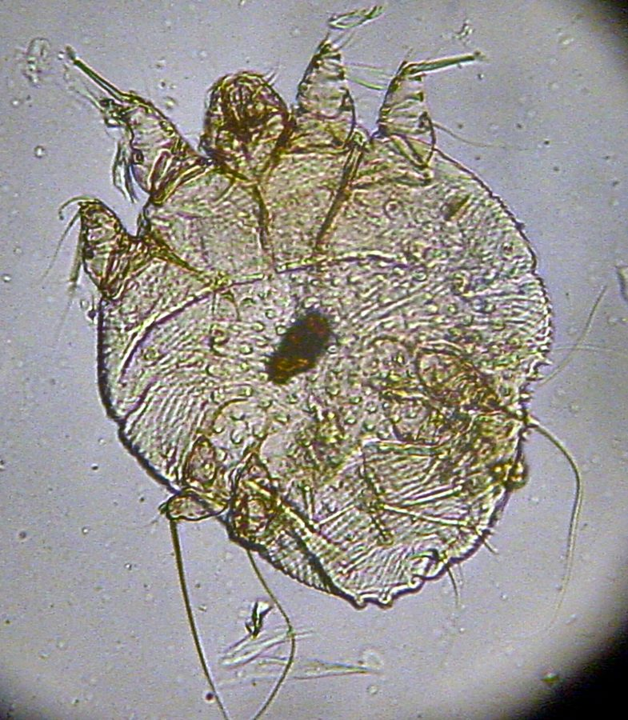

खाज का कीटScabies Mite
Sarcoptes scabiei · Sarcoptidae · SPD-0022

- Scientific nameवैज्ञानिक नाम
- Sarcoptes scabiei de Geer, 1778
- Familyकुल
- Sarcoptidae
- Hindiहिंदी
- खाज का कीट
- Local namesस्थानीय नाम
- scabies mite, khaj, khujli, itch mite, scabies
- Status hereयहाँ की स्थिति
- native
- Movementआवागमन
- Resident, here all year
- IUCNIUCN
- not evaluated
- Reviewसमीक्षा
- audited and independently read
When to look कब देखें
Present all year.साल भर मौजूद।
खाज का कीट / Scabies Mite
Sarcoptes scabiei de Geer, 1778 — Sarcoptidae
खाज का कीट — यह बहुत छोटा, नंगी आँख से न दिखने वाला कीट है जो मानव त्वचा में सुरंगें बनाकर रहता है और भयंकर खुजली पैदा करता है। यह एक परजीवी है, जो एक व्यक्ति से दूसरे को त्वचा के सीधे संपर्क से या संक्रमित कपड़ों और बिस्तरों के द्वारा फैलता है। गरीब बस्तियों, जेलों, स्कूलों और भीड़ भरी जगहों में यह बीमारी तेजी से फैलती है। खुजली से रक्त बहता है, त्वचा संक्रमित हो जाती है। सफ़ाई और औषधि से इसे नियंत्रित किया जा सकता है।
Quick Identification त्वरित पहचान
| Feature | Description |
|---|---|
| Size | 0.2–0.5 mm; visible only under magnification |
| Body shape | Oval, flattened dorsoventrally; eight legs (as mites have) |
| Colour | Pale yellowish-white to brown |
| Legs | Short, stout legs; anterior legs have suckers (caruncles) |
| Movement | Very slow; burrows into skin |
| Presence | Not visible on skin; diagnosed by finding burrows and by clinical signs |
Field tip: Scabies mites are never visible to the naked eye; diagnosis is clinical. Look for characteristic S-shaped or straight burrows in the skin, typically on hands, wrists, elbows, knees, genitals, and between the toes. Intense itching, especially at night, is the hallmark symptom. The itching is often worse after bathing or in warm conditions.
हिंदी — कैसे पहचानें: आँख से नहीं दिख सकता। सुरंगें त्वचा में दिखती हैं — हाथों, पैरों के बीच, कोहनियों पर सफ़ेद या भूरी लकीरें। रात में खुजली बहुत बढ़ जाती है।
Morphology आकारिकी
Biometrics:
| Measurement | Range |
|---|---|
| Female body length | 0.30–0.45 mm |
| Male body length | 0.20–0.30 mm |
| Leg span | 0.4–0.6 mm |
Body structure: The body is oval and flattened, with eight short, stout legs. The anterior four legs terminate in caruncles (sucker-like structures) used for gripping the host skin. The posterior legs are shorter and may be reduced in number in some life stages.
Mouthparts: Simple, adapted for piercing the skin epidermis.
Sexual dimorphism: Females are larger than males. The female anus is terminal; the male has copulatory organs on the ventral surface.
Life stages: Eggs → Larvae (six-legged) → Nymphs (eight-legged) → Adults.
हिंदी: बहुत छोटा, सफ़ेद या भूरा, आठ टाँगें। मादा बड़ी होती है। सुरंग खोदते समय वह त्वचा के ऊपर रेंगती है और फिर अंदर घुसती है।
Behaviour & Ecology व्यवहार और पारिस्थितिकी
Obligate human parasite. Sarcoptes scabiei var. hominis is an obligate parasite of human skin, living its entire life cycle in the epidermis. A pregnant female burrows into the skin, creating an S-shaped or winding tunnel, laying 2–3 eggs per day as she moves. The eggs hatch in 3–4 days; the larvae and nymphs move to the surface, causing intense itching, then re-burrow. The full life cycle takes 10–14 days.
Transmission. Transmission occurs through direct skin-to-skin contact (most efficient route) or indirectly through infested clothing, bedding, and fomites. A single pregnant female can initiate infection. Transmission is facilitated by overcrowding, poor hygiene, and lowered immunity.
Seasonal pattern. In temperate climates, scabies peaks in cool months (November–March); in tropical regions, year-round transmission occurs, with peaks during cooler seasons.
Host specificity. Different animal hosts have their own subspecies or strains: S. scabiei var. canis on dogs and other canids, S. scabiei var. bovis on cattle. Cross-infection can occur but is usually temporary.
हिंदी: त्वचा में सुरंग खोदता है, अंडे देता है। सुरंग से तंबू जैसा आकार बनता है। 10–14 दिन में परिपक्व हो जाता है। त्वचा के संपर्क से फैलता है।
Life Cycle / Phenology जीवन चक्र
| Stage | Duration | Location |
|---|---|---|
| Egg | 3–4 days | Maternal burrow in epidermis |
| Larva | 2–3 days | Skin surface or in pustules; six legs |
| Protonymph | 2–3 days | Skin surface and shallow burrows; eight legs |
| Deutonymph | 2–3 days | Shallow burrows; eight legs |
| Adult | 2–3 weeks on host | In burrows and on surface; reproduction |
| Entire life cycle | 10–14 days | In human epidermis |
Reproduction. After mating (which occurs on the skin surface), the female burrows into the stratum corneum and lays eggs. Males die after mating and do not burrow. A female produces hundreds of eggs during her 2–3-week lifespan.
हिंदी: अंडा → लार्वा → प्रोटोनिम्फ → डिउटोनिम्फ → वयस्क; कुल 10–14 दिन। मादा सुरंग खोद कर 100–200 अंडे देती है।
Host Plants or Prey आहार
Host specificity (human form):
- Humans exclusively (obligate parasite)
- Feeds on skin cells and tissue fluids in the epidermis
- Causes tissue damage and inflammatory response
Predators / Natural Enemies शत्रु
- Once on a human host, natural predators are minimal
- Washing and acaricides (mite-killing pesticides) remove mites from skin
- Immune system can limit infection, but response is slow
Agricultural / Human Relevance कृषि प्रासंगिकता
Health problem: Scabies in humans. Scabies is a worldwide public health problem affecting an estimated 130–300 million people annually, with highest burden in developing regions and among low-income populations. It is particularly prevalent in settings of overcrowding, poverty, poor sanitation, and high population density.
Clinical presentation. The itch is caused by the female mite's burrowing activity and the host's allergic response. Severe itching leads to scratching, causing bleeding and secondary bacterial infection. In immunocompromised individuals, "Norwegian" or "crusted" scabies develops, in which huge numbers of mites proliferate, forming thick scaly crusts.
Epidemiology in eastern UP. Scabies is endemic in rural Basti and Ayodhya districts, particularly in poor settlements, schools, and prisons. Periodic outbreaks occur in crowded settings.
Control measures (published recommendations):
- Skin treatment: Topical acaricides (permethrin, ivermectin, benzyl benzoate) applied to all body surfaces below the neck; treatment is repeated after one week to kill emerging mites.
- Household management: All household members and close contacts require simultaneous treatment. Clothing and bedding should be washed in hot water and dried in sunlight (heat kills mites).
- Environmental control: Regular bathing, nail hygiene (short nails reduce secondary infection), and keeping living spaces clean.
- Health system response: In endemic areas, mass treatment campaigns (using ivermectin) have proven effective in reducing prevalence.
Not medical advice: This profile describes the health problem and published public health measures. Individuals with scabies symptoms should seek diagnosis and treatment from qualified healthcare providers.
हिंदी: खुजली से पूरी रात नींद नहीं आती। खरोंचने से खून बहता है। सब परिवार के सदस्यों को इलाज की ज़रूरत है। कपड़े और बिस्तर गर्म पानी से धोने चाहिए।
Expected Locally स्थानीय रूप से अपेक्षित
Not a field record. Written from published accounts for eastern Uttar Pradesh. No confirmed local sighting yet — if you have seen it, that is what the atlas needs.
अभी तक स्थानीय पुष्टि नहीं। यह विवरण प्रकाशित स्रोतों से है, किसी अवलोकन से नहीं।
Endemic in low-income settlements, crowded residential areas, schools, and prisons in Basti district. Clinical cases are expected year-round but are more common during cooler months (October–March). A confirmed case would be microscopic identification of mites from skin scrapings or clinical diagnosis by a healthcare provider.
Distribution वितरण
Global range: Worldwide, affecting all human populations.
In India: Endemic in all states, with higher prevalence in rural and low-income urban areas. Highest burden in northern India, including Uttar Pradesh.
In Uttar Pradesh: Endemic in all districts, particularly in poor and overcrowded settings.
In Basti district / eastern UP: Endemic; periodic outbreaks in schools and residential areas.
Research Questions शोध प्रश्न
- What is the prevalence of scabies in school-aged children in Basti district, and how does it vary seasonally? — Conduct skin examinations in schools monthly; identify clinical cases.
- Which acaricides are most effective against local Sarcoptes scabiei isolates in Basti? — Conduct bioassays of mites collected from patients against standard pesticides.
- How effective are community education programs in reducing scabies prevalence through improved hygiene and mass treatment? — Implement a trial in a settlement; compare pre- and post-intervention prevalence.
- What is the burden of secondary bacterial infection in scabies cases in the district, and which bacteria are most common? — Culture skin lesions from scabies patients.
- Does ivermectin mass treatment in schools reduce scabies transmission compared to no treatment? — Randomised trial design in schools.
Similar Species मिलती-जुलती प्रजातियाँ
| Species | How to tell apart | हिंदी |
|---|---|---|
| Sarcoptes scabiei var. canis (dog mange mite) | Infects dogs and other animals; rarely infects humans and does not establish persistent infections | कुत्तों का खाज का कीट — इंसान में नहीं रहता |
| Psoroptes ovis (sheep mange mite) | Larger, on sheep and animals; does not parasitize humans | भेड़ों का खाज — इंसान में नहीं |
| Demodex folliculorum (follicle mite) | Smaller, lives in hair follicles; different morphology; usually asymptomatic | बाल की जड़ में रहने वाला घुन; खुजली नहीं |
Field rule: Intense itching with visible burrows on hands, wrists, between toes, and genital region, especially at night, in a person who has had close contact with another infected person, is scabies; microscopic examination of skin scrapings confirms Sarcoptes scabiei.
Taxonomy & Classification वर्गीकरण
Original description. Described by de Geer in 1778 as a mite causing human itch. The genus Sarcoptes (from Greek sarx, flesh, and optein, to see) includes itch mites parasitic on various vertebrates.
Subspecies and host races. Multiple host-adapted strains or subspecies exist: S. scabiei var. hominis (human), var. canis (canine), var. bovis (bovine), var. suis (swine), and others. Cross-infection can occur but with low efficiency and poor establishment.
Family and order placement. Order Acari (ticks and mites), family Sarcoptidae (burrowing mites), subfamily Sarcoptinae.
Phylogenetic notes. Sarcoptes is an ancient genus of host-specific parasitic mites, with evidence of human parasitism dating back millennia.
IUCN status rationale. Not evaluated. Not a wild organism; a human parasite of ancient origin and continued global presence.
Photo Gallery फोटो गैलरी
Photos needed आवश्यक फोटो
- [ ] Microscopic view of mite (सूक्ष्मदर्शी से)
- [ ] Characteristic burrows on human skin (त्वचा पर सुरंगें)
- [ ] Clinical scabies lesions (चिकित्सा चित्र)
No photos yet — add field photos to media/species/scabies_mite/ and run node scripts/sync_photos.js.
References संदर्भ
- de Geer, C. (1778). Mémoires pour servir à l'histoire des insectes, vol. 7. Stockholm. [original description]
- Arlian, L.G. (1989). Biology, ecology and prevalence of Sarcoptes scabiei. Annual Review of Entomology 34: 139–161.
- Chosidow, O. (2006). Scabies. New England Journal of Medicine 354: 1718–1727. [clinical review]
- Walton, S.F. & Currie, B.J. (2007). Scabies: a tropical dermatology perspective. Journal of Tropical Medicine 87: 12–16.
- Mumcuoglu, K.Y. (2003). Ectoparasites and vector-borne diseases in refugees and displaced persons. Emerging Infectious Diseases 9: 217–223.
- GBIF Occurrence Data — Sarcoptes scabiei, India (2024).
Source file: species/fauna/spiders/scabies_mite.md